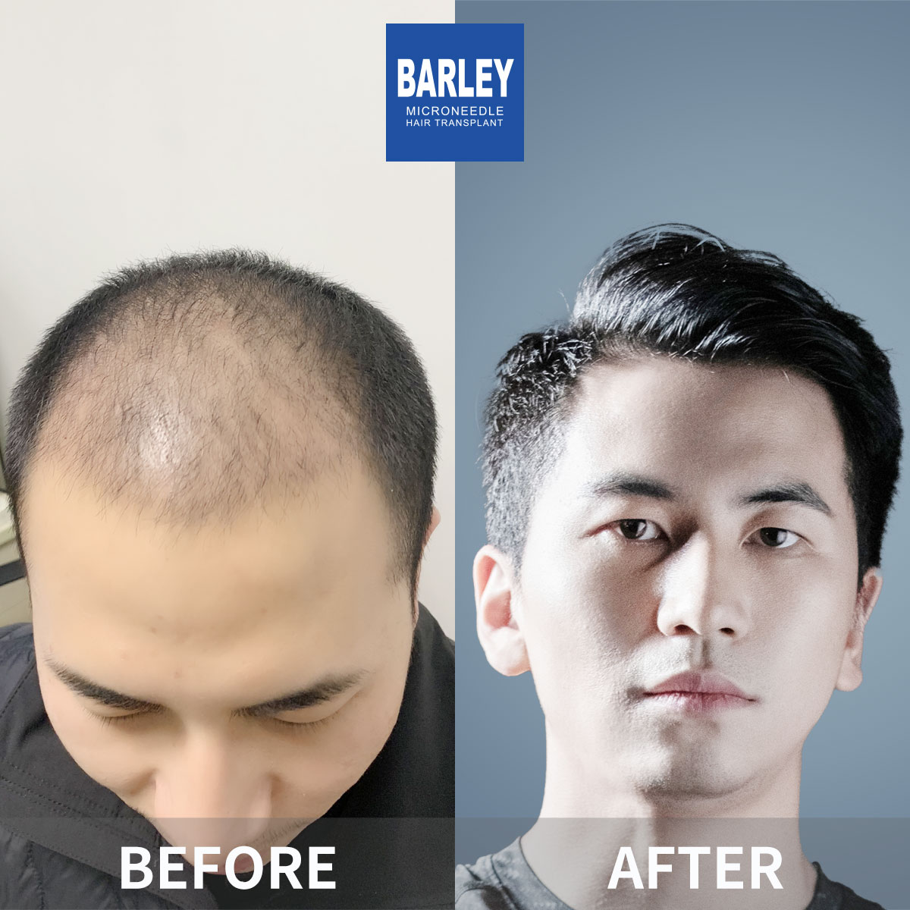

Minoxidil is one of the most extensively researched and widely used topical treatments for hair loss, with over 30 years of clinical validation. Originally developed as an oral medication for high blood pressure, its unexpected hair growth side effect led to the creation of a topical formulation specifically designed for androgenetic alopecia. Today, it is available over the counter in two strengths— % and 5%— — both liquid and foam formats, with Rogaine being the most recognised global brand. Both men and women can use minoxidil, and it is particularly effective for thinning at the crown, though many patients also see improvements in the frontal and temporal areas. Unlike finasteride, minoxidil works independently of hormonal pathways, making it a suitable option for women and patients who prefer to avoid systemic medications.
Minoxidil acts as a vasodilator, widening blood vessels in the scalp to improve circulation and nutrient delivery to hair follicles. This enhanced blood flow helps reactivate dormant or miniaturised follicles, encouraging them to re-enter the anagen (growth) phase and produce thicker, stronger hair strands. Research also suggests that minoxidil activates potassium channels within follicular cells, further stimulating growth activity.
Each hair follicle cycles through growth (anagen), regression (catagen), and resting (telogen) phases. In pattern hair loss, the anagen phase progressively shortens with each cycle. Minoxidil counteracts this by prolonging the growth phase, giving follicles more time to produce longer, thicker hairs before entering the shedding stage. With continued use, this translates into measurably improved hair density over time.
By dilating capillaries in the scalp, minoxidil increases microcirculation around hair follicles. Better blood flow delivers more oxygen and essential nutrients to follicle cells, fuelling the metabolic processes required for healthy hair production. This mechanism is particularly beneficial for follicles weakened by reduced blood supply during the DHT-driven miniaturisation process.
Minoxidil should be applied directly to the scalp\u2014not the hair\u2014twice daily, ideally in the morning and evening. For liquid formulations, use the provided dropper to dispense exactly 1 mL onto affected areas, then massage gently with your fingertips. If using foam, apply approximately half a capful to a dry scalp. It is essential that both your scalp and hair are completely dry before application, as moisture significantly reduces absorption. Consistency is critical\u2014skipping applications reduces effectiveness. Always wash your hands thoroughly after use to avoid transferring the product to other areas. Minoxidil is for external use only and must never be applied to irritated, sunburnt, or broken skin. Most patients notice reduced shedding within 2-4 weeks, though visible new growth typically takes 4-6 months of uninterrupted daily use.
Understanding the minoxidil timeline helps set realistic expectations and prevents premature discontinuation. During weeks 2-8, many patients experience temporary increased shedding\u2014this is a normal and positive sign that the treatment is working, as older telogen-phase hairs are being replaced by new growth. By months 2-3, shedding typically stabilises and early regrowth may appear as fine, lightly pigmented hairs. Between months 4-6, these hairs gradually thicken and darken, transitioning into terminal hairs that contribute to noticeable density improvement. Maximum results are usually visible at the 12-month mark of consistent use. Beyond this point, ongoing application remains necessary to maintain results\u2014stopping treatment will cause gradual loss of treatment-maintained hair over 3-6 months. For optimal outcomes, many patients combine minoxidil with complementary treatments such as finasteride or PRP therapy. Our specialists at Barley Hospital can design the most effective protocol for your individual needs.
Expert-supervised topical therapy for hair preservation and regrowth

Minoxidil is the most extensively researched topical treatment for hair loss available today. FDA-approved and available without a prescription, it works by stimulating follicular activity and improving scalp blood circulation. At Barley Hair Transplant, our physicians provide expert guidance on proper minoxidil application as part of a comprehensive restoration strategy, helping you maintain existing hair and encourage new growth.
Understanding how this proven treatment stimulates regrowth
Follow expert instructions for the best possible outcomes
A structured approach for the best possible results
Professional assessment of your hair loss pattern and goals
Learn the correct technique for maximum absorption
Consistent twice-daily application, morning and evening
Allow 3-6 months before visible improvements appear
Documented evaluation of your treatment outcomes
Continue use to sustain and build on your results
Professional guidance that makes a real difference to your results
Unlike buying minoxidil off the shelf alone, our programme includes a professional assessment of whether it is right for you, personalised strength selection, and ongoing monitoring for both safety and effectiveness.
We understand how minoxidil works alongside other treatments\u2014finasteride, PRP, laser therapy, and surgery. Our physicians design personalised combinations to deliver the best possible therapeutic outcomes for your individual case.
Proven guidance on proper application techniques, optimal timing, common mistakes to avoid, and ways to get the most out of your treatment\u2014all backed by over 18 years of hands-on clinical experience.
Internationally recognised expertise with documented outcomes
Industry pioneers in microneedle technology since 2006
Uniform quality standards across all locations
Proprietary microneedle and implant systems
Trusted by international patients worldwide
Dedicated support for overseas patients
Modern facilities with rigorous protocols
Real transformations from our minoxidil treatment programme





Real experiences from our treatment recipients

Thrilled with treatment progress

Noticeably healthier hair

Visible improvement documented

Happy with expert guidance
Feeling genuinely better

Continuous improvement visible

Delighted with final results

Clear evidence of progress
Honest feedback from our international patients
"I had been using minoxidil incorrectly for months before consulting Barley. They taught me the proper application technique\u2014applying directly to the scalp rather than the hair, using exactly 1 mL per dose, and massaging gently. Within three months, I noticed baby hairs along my hairline that had not been there before."
"The initial shedding phase really worried me\u2014I lost more hair in the first two weeks than I had in the entire previous year. The Barley team explained this was completely normal and actually a sign the medication was working. They were right. By week eight, the shedding stopped and new growth began. Now at month six, my crown density has improved significantly."
"I switched from the liquid to the foam formulation on my dermatologist's recommendation, and the difference was remarkable. The foam absorbs much faster and feels lighter on my scalp. Combined with microneedling once a week as advised by Barley, my results at four months exceeded all my expectations."
"I was concerned about the potential side effects\u2014particularly scalp irritation and headaches. The team at Barley started me on the 2% concentration to build tolerance, then gradually increased to 5%. This cautious approach meant I experienced minimal side effects while still achieving excellent regrowth results."
"The key for me was consistency. I set reminders on my phone for morning and evening applications, and I never missed a dose for 12 months. The progress photos I took monthly show the gradual improvement\u2014from barely visible fuzz at month two to genuine thickening by month nine. Patience and persistence absolutely pay off."
"As a woman experiencing female pattern hair loss, I was hesitant to try minoxidil. The Barley specialists explained how it works differently for women and recommended the 2% formulation twice daily. After five months, my parting line is noticeably narrower and my ponytail feels thicker. I feel like myself again."
Modern, comfortable treatment environments

State-of-the-art treatment facility

Premium patient lounge

Sterile and fully equipped

Confidential and professional setting

Relaxing recovery space

Warm and welcoming entrance
Expert answers on usage, side effects, and results timeline
Click to copy contact information
15810155700
+86 13730143529
hairtransplant@qq.com

Everyone's hair loss journey and solution are unique due to a variety of factors. Our hair restoration experts will assist you in determining the root cause and the best solution for your hair restoration plan. If you have any questions, please ask; we are happy to assist.